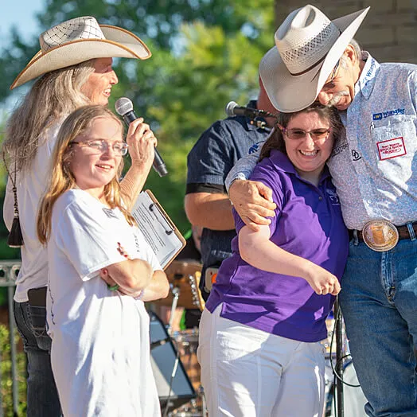

Donate as an Individual
Bobby Fest
Bobbyfest started out 9 years ago as a backyard music festival hosted by Bobby & Lisa Rawls. In its third year, Bobby decided to leverage the event to raise money for charity. For the past 5 years, Bobbyfest has served as a charity event honoring Amy’s Wish With Wings. Attendees will enjoy live music, local vendors, auctions, & much more!
How to Sponsor
To sponsor our event and get some free tickets, download and fill out the form below. Email to amyswishwithwings@gmail.com
Bobby Fest FormsVolunteer
Prospective volunteers can download and fill out the form below.
Volunteer Release/Waiver Form